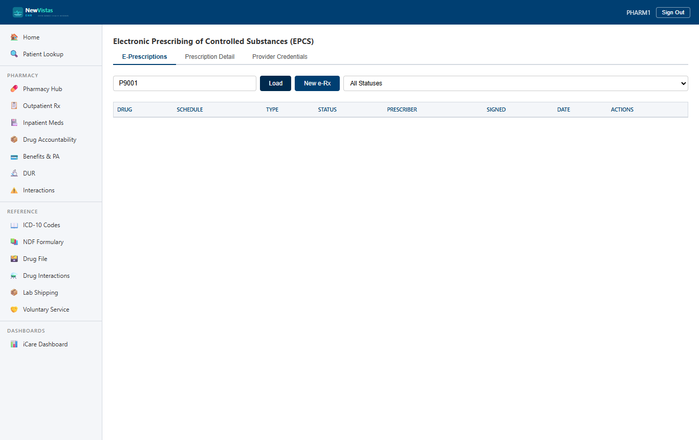

Electronic Prescribing of Controlled Substances (EPCS)
The EPCS screen is where controlled-substance e-prescriptions are created, signed with two-factor authentication, transmitted, and acknowledged — and where provider EPCS credentials are managed. It's the DEA-compliant electronic pathway for Schedule II–V medications.
Receive a new EPCS prescription
- In the sidebar, under Pharmacy, open EPCS (or go to
/epcs). - Enter the Patient ID (e.g.
30) and click Load. - Click New e-Rx to open the creation form.
- Fill in the drug details — transaction type (NewRx), drug name, DEA schedule, NDC, quantity, days supply, refills authorized (zero for Schedule II), sig, and diagnosis code.
- Fill in the prescriber details (NPI, DEA, name, credential ID) and the pharmacy details (NCPDP ID, name, address).
- Click Create e-Prescription.

A new e-prescription enters the table with Status Draft (gray badge) and Signed Unsigned (yellow badge). The transaction type (NewRx) is a plain-text label, not a status. Each row offers View and Sign actions.
View the prescription detail
Click View to switch to the Prescription Detail tab. It lays out the full record in card sections — Drug Information, Prescriber Information, Pharmacy Information, Status Information, and the 2FA Verification Record (empty until the prescription is signed).
Sign with two-factor authentication
- On the E-Prescriptions tab, click Sign on a Draft/Unsigned prescription.
- Choose a 2FA Method — None, Hardware Token, Biometric, One-Time Password, Smart Card, or Mobile Authenticator.
- Enter the Certificate Thumbprint and the Prescription Hash, and set Valid to Yes.
- Click Sign with 2FA.
The row updates: Status becomes Signed (green badge), the Signed column turns green, and the Sign button disappears. The signing event populates the 2FA Verification Record on the detail view (method, thumbprint, timestamp, validity).
Manage provider credentials
The Provider Credentials tab lists each provider's EPCS credential — name, DEA number, NPI, credential level, 2FA method, and Active/Suspended status. Suspending a credential prevents that provider from signing EPCS prescriptions; reactivating it restores signing capability.